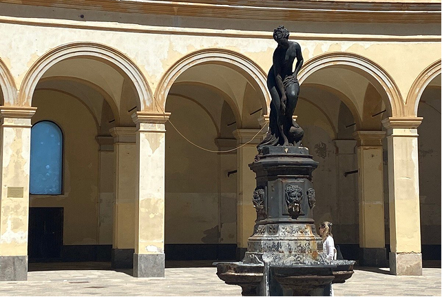
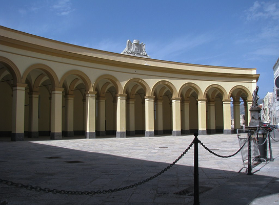
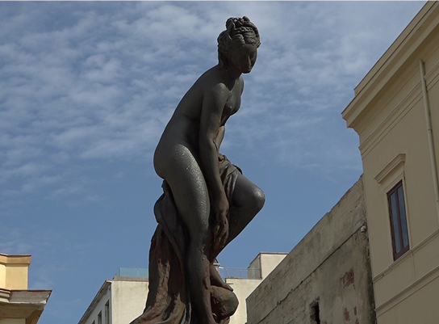
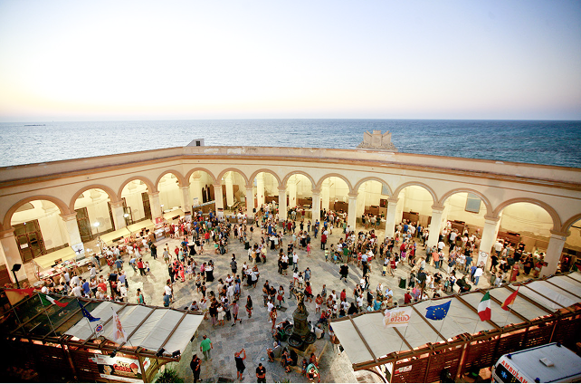

il cuore del mercato del pesce di Trapani
Piazza del Mercato del Pesce è uno dei luoghi più caratteristici e vivaci della città di Trapani, un punto in cui tradizione marinara, storia e vita quotidiana si incontrano creando un’atmosfera unica. Situata nel cuore del centro storico, vicino al porto, la piazza rappresenta da secoli un importante punto di riferimento per la comunità locale e per i visitatori che desiderano scoprire l’anima più autentica.
Al centro della piazza si svolge ancora oggi il tradizionale mercato del pesce, uno dei più antichi e suggestivi della Sicilia. Fin dalle prime ore del mattino pescatori e venditori espongono il pescato del giorno: tonni, gamberi, seppie, ricci di mare e molte altre specialità del Mediterraneo. Il mercato è un vero spettacolo di colori, profumi e suoni, dove il vociare dei venditori e il movimento dei clienti creano un’atmosfera dinamica e autentica. Attorno alla piazza si affacciano edifici storici e palazzi dalle facciate chiare, tipiche dell’architettura rapanese, che riflettono la luce del sole e contribuiscono a rendere lo spazio luminoso e accogliente.


tradizione marinara e vita cittadina
Oltre alla sua funzione commerciale, la piazza offre numerosi scorci pittoreschi che raccontano la storia del quartiere marinaro. Le strade che si diramano intorno conducono a vicoli stretti, piccole botteghe e ristoranti tipici dove è possibile assaporare piatti tradizionali a base di pesce fresco. Passeggiando nei d intorni si possono osservare dettagli architettonici, balconi decorati e angoli suggestivi che rivelano il fascino del centro storico di Trapani. La piazza è anche un luogo di incontro e di socialità per i cittadini. Durante l’anno ospita eventi, manifestazioni culturali e iniziative legate alla tradizione marinara della città.
In queste occasioni lo spazio si anima di musica, profumi di cucina locale e momenti di condivisione che coinvolgono residenti e turisti. Questo continuo alternarsi tra attività quotidiane e momenti di festa rende Piazza del Mercato del Pesce uno dei luoghi più dinamici e rappresentativi della vita trapanese. La piazza non è soltanto un mercato o un luogo da visitare, ma uno spazio da vivere.
